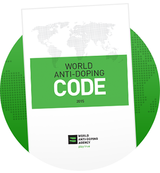
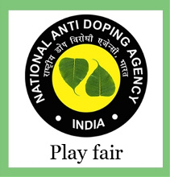

DOPING In
order
to
enhance
their
performance,
sportsmen use
specific ‘methods’ that optimize the qualities needed for their sport, on the basis of various
physiological, biological, psychological factors.According to a widespread opinion, ‘upstream’
doping,
used for the above-mentioned aim, is ‘bad’ and should be distinguished from ‘downstream’ or ‘good’
doping, meant to help athletes recover their physiological and biological balance. In fact, both
types
of doping are complementary, since they artificially boost the body's abilities, the second type of
doping aiming to make up for the negative effects of the former.

Anti-Doping
Organization A
Signatory that is responsible for adopting rules for initiating implementing or enforcing any part
of
the Doping Control process. This includes, for example, the International Olympic Committee, other
Major
event Organizations that conduct Testing at their Events, WADA, International Federations, and
National
Anti -Doping Organization
Disqualification Means the player is not longer allowed to take part in a particular Competition or
Event, with all resulting consequences including forfeiture of any medals, points and prizes.
Ineligibility Means the Player or other person is barred for a specified period of time from
participating in any competition or to other activity.
Provisional Suspension Means the Player or other person is barred temporarily from participating in
any
Competition prior to the final decision at a hearing.
The process including test, distribution planning, Sample collection & handling, laboratory analysis, results management, hearings and appeals.
The entity (ies) designated by each country as possessing the primary authority and responsibility to adopt and implement anti-doping rules, direct the collection of samples, the management of test results, and the conduct of hearings, all at the national level. If this designation has not been made by the competent public authority (ies), the entity shall be the country's National Olympic Committee or its designee.
A Doping Control which takes place with no advance warning to the PLAYER and where the PLAYER is Continuously chaperoned from the moment of notification through sample provision.
The Sepaktakraw player establishing that he or she did not know or suspect, and could not reasonably have known or suspected even with the exercise of utmost caution, that he or she had used or been administered the prohibited substance or prohibited method.
The Sepaktakraw Player establishing that his or her fault or negligence, when viewed in the totality of the circumstances and taking into account the criteria for No Fault or Negligence, was not significant in relationship to the anti-doping rule violation.
The Complete and Updated information cane be obtained from the official site of WADA www.wada-ama.org
For Latest List of Banned Substances Click HereCopyright © 2021 Sepaktakraw Federation Of India. All Rights Reserved